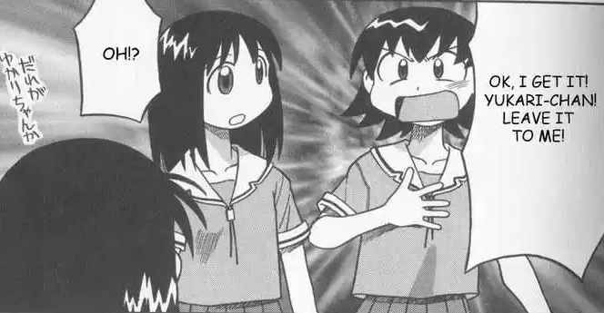
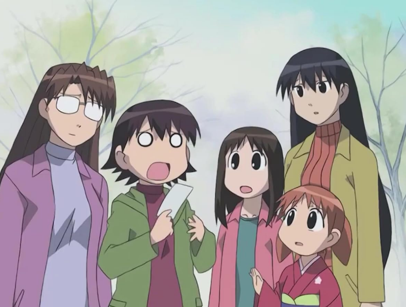
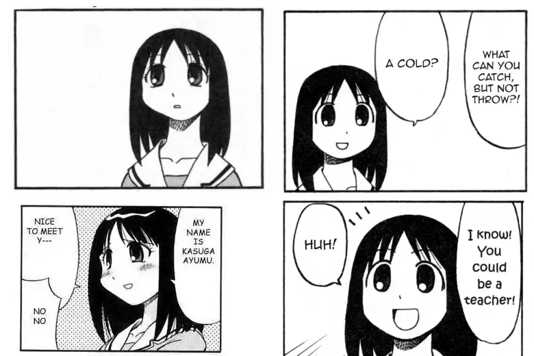
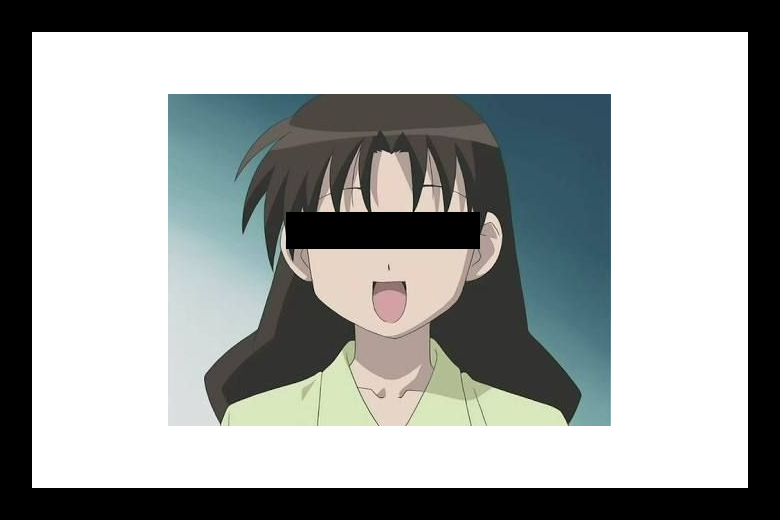

Latar Belakang
Pembuat website ini memberikan praduga jika gadis Ayumu Kasuga bukanlah dia yang sebenarnya. Tidak diketahui pihak yang dimaksud bagaimana keadaannya, apakah masih hidup atau sudah wafat.
Namun, hal yang sangat jelas adalah Ayumu Kasuga telah diganti oleh gadis yang untuk kedepannya akan kita panggil sebagai Osaka. Pembahasan dan penyelidikan lebih lanjut mengenai praduga ini diharapkan segera dilakukan agar kepastian hukum dan langkah yang diambil selanjutnya bisa segera diputuskan.
Pencurian identitas atau identity theft sendiri adalah perbuatan kriminal, didasarkan pada UU PDP (Perlindungan Data Pribadi), Setiap orang yang dengan sengaja dan melawan hukum menggunakan data pribadi yang bukan miliknya dipidana penjara paling lama 5 tahun dan/atau pidana denda paling banyak Rp5 miliar
.
Berdasarkan perspektif hukum Jepang, dimana terduga korban berada, pencuri identitas bisa dipidana dengan hukuman penjara 1 tahun dan denda bisa sampai JPY 500.000.
Ayumu dan Osaka
Mengapa saya katakan Ayumu dan Osaka merupakan dua orang yang berbeda? Mari kita telaah gambar-gambar berikut.

Ayumu yang asli memiliki tinggi 156 cm, lebih tinggi dari rekannya Tomo. Pada foto ini hanya masalah perpektif saja, walaupun begitu masih bisa kita lihat tinggi Ayumu dan Tomo hampir sejajar.

Di lain sisi, Osaka memiliki tinggi lebih rendah yakni sekitar 154 cm. Bisa dilihat pada gambar ini Osaka lebih rendah dari rekannya Tomo. Tinggi Tomo dikonformasi masih sama dengan foto sebelumnya, tetapi kenapa Ayumu bisa lebih pendek? Jawabannya jelas sekali karena yang di foto kedua bukanlah Ayumu.
Mungkin Anda sudah melihat sedikit kejanggalan lainnya pada fisik dari kedua foto di atas, tetapi mari kita perjelas lagi.

Jika kita perhatikan pada foto di kanan dan kiri, terdapat dua perbedaan yang bisa saya sebutkan secara eksplisit. Pertama, Ayumu memiliki bulu manta yang lentik sedangkan Osaka tidak. Kedua, Ayumu memiliki rahang yang agak tirus. Kedua foto ini juga memiliki aura yang berbeda dimana Osaka memiliki kesan yang lebih kekanak-kanakan dibanding Ayumu.
Seperti yang saya bahas sebelumnya mereka berdua tidak hanya berbeda secara fisik, tetapi juga secara mental. Osaka terlihat seperti memiliki setengah dari IQ Ayumu dan dia juga memilki gejala kecanduan akan sejenis makanan yang bernama Sata Andagi.
Pihak Terlibat
Membongkar sebuah konspirasi besar tentu tidak semudah yang dikira. Namun, saya memiliki nama setidaknya satu orang yang saya curigai terlibat dalam permainan cantik pencurian identitas ini.

Oknum guru berinisial YT ini diduga berat terlibat dalam kasus pencurian identitas ini. Beliau, diduga pihak yang mencari sosok Osaka untuk menggantikan Ayumu dengan memberikan sejumlah uang. Sedikit informasi dari intelejen kami, Osaka merupakan anak yang kurang beruntung yang tinggal di desa kecil di Osaka. Dengan dia menyamar sebagai Ayumu, dia bisa mendapatkan hal yang sebelumnya tidak bisa dia gapai yakni 'pendidikan', selain itu uang dari guru inisial Y ini dikirim ke kampung untuk memenuhi kebutuhan keluarganya.
Sampai saat ini, kasus ini masih meninggalkan teka-teki besar. Apa motof dari YT ini untuk menyuruh seseorang menggantikan Ayumu? Diamanakah Ayumu berada? Bagaimana Keadaan Ayumu, apakah masih sehat walafiat?